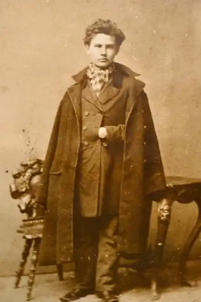

Прус Болеслав (Prus, Boleslaw; автонім: Гловацький, Александр, — 20.07. 1847, Грубешів, побл. Любліна — 19.05.1912, Варшава) — польський письменник. Народився у зубожілій шляхетській сім'ї. Рано залишився без батьків. Змалку виховувався у тітки, а згодом — у брата Леона Гловацького. Ще в гімназії під впливом брата Леона взяв участь у польському повстанні 1863—1864 pp., метою якого була національна незалежність Польщі і знищення феодальних порядків. Був поранений, деякий час перебував під арештом у Любліні. Згодом Прус не раз замислюватиметься над трагічними наслідками січневого повстання. У 1866 р. він закінчив гімназію і вступив на фізико-математичний факультет Варшавської Головної школи, проте завершити навчання не зміг через матеріальну скруту.
Інтереси Пруса у цей період були вельми розмаїтими: він читав книги з економіки, психології, історії, філософії, цікавився працями фізіолога І. Сеченова, малярством. У 1872 р. П. почав публікуватися у варшавських гумористичних журналах "Муха" та "Шпильки". Відтак дебютував у літературі як автор гумористичних оповідань під загальною назвою "Суспільні ескізи". Пізніше, у 1890 р., Прус оцінюватиме свої перші літературні публікації як "безглузді жарти", які він мусив писати, щоби заробити на хліб. Але насправді гумор відіграватиме особливу роль у багатьох його творах, залишаючись способом освоєння дійсності. У газетах "Варшавський кур'єр" (1875—1887) і "Щоденний кур'єр" (1887-1901) Прус регулярно публікував фейлетони, у яких яскраво виявився його сатиричний талант. Він також публікував у пресі публіцистичні статті: "Що таке соціалізм як економічна система?", "Начерк програми в умовах розвитку суспільства "й ін. В атмосфері соціально-політичної боротьби між консервативною шляхтою і ліберальними буржуазно-поміщицькими колами на світогляд і естетичні принципи Пруса визначальний вплив справили ідеї варшавського позитивізму. Поділяючи переконання польського позитивізму, що поліпшення життя можна досягнути лише за допомогою економічного піднесення Польщі, пристосування до реальної дійсності й аналізу її нових умов, віри у прогрес та освіту, Прус писав: "Скорившись перед необхідністю, візьмемося за сплату суспільних боргів, обмеження наших потреб і запитів, розвиток сільського господарства і промисловості... поширення здорових засад освіти і моральності", цілковито заперечуючи таким чином будь-який революційний шлях оновлення суспільства. На цій основі сформувався і реалістичний метод Пруса-митця, за допомогою якого автор аналізує і критично осмислює типові суспільні відносини.
Розвиток реалістичного методу у творчості Пруса можна розділити на кілька етапів. Зокрема, більшість оповідань 1872—1877 pp. ("Мешканець з горища", 1874; "Палац і халупа", 1874; "Святвечір", 1874; "Село і місто", 1875; "Прокляте щастя", 1876) — це соціальні "новели з тезою", що мають відверто тенденційний, утилітарний і дидактичний характер, написані під безпосереднім впливом ідей позитивізму. Це виявляється у рішучому протесті проти соціальної несправедливості, відвертому захисті упосліджених і скривджених, поділі героїв на позитивних і негативних, використанні авторських пояснень і повчальних напучувань, звернень до читача. Поступово Прус відмовився від позитивістської тенденційності і в новелах 1878—1884 pp. ("Зворотна хвиля", 1880; "Катеринка", 1880) приділяв більше уваги об'єктивності зображення життя, "правдивості відтворення типових характерів за типових обставин". Герої його новел зазвичай належать до нижчих суспільних верств — міська біднота і робітники, яким автор щиро симпатизує. Це — муляр Якуб ("Мешканець з горища"), сироти Ясь і Панєвка ("Сирітська доля"), робітник-будівельник Михалко ("Михалко") та ін. Цікавими є також оповідання про дітей ("Аптек", "Гріхи дитинства", "Анелька", "Пригоди Стася" й ін.), у яких особливу увагу Пруса-художника привертає можливість показати дитяче сприйняття світу, розкрити дитячу психологію. У 1885 p., коли розпочався процес поширення буржуазних відносин у аграрному секторі і селянське питання набуло особливого значення, Прус написав відому повість "Форпост" ("Placowka"), героєм якої став селянин Слимак. Майстерність письменника-реаліста вдосконалювалася. Людський характер у повісті показаний у всій складності, в сукупності різноманітних властивостей і якостей. Оповідання та повісті того періоду свідчать про те, що Прус у своїх поглядах залишався послідовником варшавського позитивізму. Закономірним був перехід Пруса від малого жанру до широкого, епічного узагальнення, де, за словами письменника, можна було б "охарактеризувати суспільне життя, взаємозв'язки і типи кількох поколінь". Результатом ідейно-художніх пошуків стало створення у 1887—1889 pp. соціально-психологічного роману "Лялька" ("Lalka"), який вважається одним із найзначніших досягнень польської реалістичної літератури XIX ст. У центрі роману — історія духовної кризи Станіслава Вокульського, котрий так і не зміг подолати протиріччя між своїм соціальним статусом капіталіста й ідеалами, що формувалися в період революційної та громадської діяльності молодого Вокульського, коли він ще мріяв про визволення народу. До самогубства героя спонукає і нерозділене кохання до великосвітської "ляльки" Ізабелли. Відома польська письменниця М. Домбровська назвала "Ляльку" "першим у польській прозі твором про кохання, написаним на високому рівні, з силою, пристрастю, з вражаючим знанням психології почуттів і водночас по-стендалівськи мужньо, економно, без сентиментальної надмірності". Для роману характерне поєднання епічності розповіді, широкого охоплення дійсності з поглибленою психологічною характеристикою героїв. У романі "Емансиповані жінки" ("Eman-cypantki", 1890—1893) на тлі сучасної Пруса дійсності змальована доля молодої вчительки Мацзі Бжеської, котра також не знаходить свого місця у житті. Чи не найпомітнішим твором Пруса став історико-філософський роман "Фараон"("Faraon", 1896), який виявився цілковитою несподіванкою для сучасників з огляду на інтерес автора до подій далекого минулого у Стародавньому Єгипті. Утім, історія цієї країни цікавила письменника і раніше (оповідання Пруса "Злегенд Стародавнього Єгипту", 1888 та ін.). Джерелами для роману слугували історичні твори французького єгиптолога Г. Масперо, "Історія Стародавнього Єгипту" Я. Жаїля, "Історія розумового розвитку Європи" американського вченого Дрейлера. Прус так сформулював тему свого роману; "Три чинники: народ — фараон — жерці. Гармонія між ними і боротьба". Рушійною силою роману є боротьба за політичну владу між могутньою кастою жерців і молодим фараоном Рамзесом XIII, в результаті якої останній гине. І тут Прус залишається прихильником ідеї позитивістів про можливість такої держави, у якій могла би розумно поєднуватися діяльність різних класів ("Народ працював, фараон керував, жерці складали плани"), розквіт якої залежав би від добробуту народу. Попри те, що роман Пруса продовжує традиції історичних романів вальтер-скоттівського типу (пригодницька фабула, мальовничий історичний і місцевий колорит тощо), у ньому трапляються і нові елементи. Так, любовна інтрига не визначає темпоритму розгортання сюжету, на історичному матеріалі автор розробляє сучасну суспільно-політичну проблематику, зокрема проблему співвідношення окремого життя та історії. Роман "Фараон" став важливим етапом на шляху становлення жанру реалістичного роману в польській літературі й "обумовив появу історичних романів типу "Петра І" О. Толстого чи "Генріха IV" Г. Манна" (Г. Каркевич). Вплив позитивізму відчувається і у написаному після поразки російської революції 1905 р. романі "Діти" ("Dzieci", 1908). Прус порівнює революційну діяльність молоді з безглуздими "дитячими" витівками. Роман "Зміни" ("Przemiany", 1911) виявився останнім і незавершеним твором письменника. З ім'ям Пруса пов'язане становлення критичного реалізму у польській літературі XIX ст.